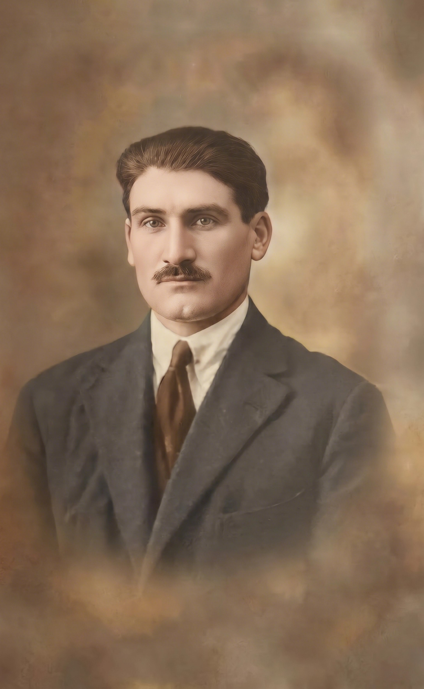

⬆️ Geração +4 (Antepassados / Pais / Avós)

Maria Martins
📅 Nasc: N/A
📍 Freguesia: N/A
💍 Cônjuge: Manuel Martins de Sam Thiago
Manuel Martins de Sam Thiago
📅 Nasc: N/A
📍 Freguesia: N/A
💍 Cônjuge: Maria Martins
⬆️ Geração +3 (Antepassados / Pais / Avós)
Joaquim Martins de S. Thiago (Borges)
📅 Nasc: N/A
📍 Freguesia: N/A
💍 Cônjuge: Rosália Maria Tavares da Silva Martins
Rosália Maria Tavares da Silva Martins
📅 Nasc: N/A
📍 Freguesia: N/A
💍 Cônjuge: Joaquim Martins de S. Thiago (Borges)
⬆️ Geração +2 (Antepassados / Pais / Avós)
Maria Tavares da Silva
📅 Nasc: 13/08/1871
📍 Freguesia: N/A
💍 Cônjuge: Albino Martins Borges

Albino Martins Borges
📅 Nasc: 06/02/1867
📍 Freguesia: N/A
💍 Cônjuge: Maria Tavares da Silva
⬆️ Geração +1 (Antepassados / Pais / Avós)

Manoel Martins Borges
📅 Nasc: 26/02/1897
📍 Freguesia: N/A
💍 Cônjuge: Gualdina Baptista (Aldina)

Gualdina Baptista (Aldina)
📅 Nasc: 1908
📍 Freguesia: N/A
💍 Cônjuge: Manoel Martins Borges
⭐ Geração 0 (Ponto de Origem Central)

Arlete Baptista (Jorge) (Alvo)
📅 Nasc: N/A
📍 Freguesia: N/A
💍 Cônjuge: Verânio Jorge
⬇️ Geração -1 (Descendência / Filhos / Netos)

Carlos A. F. Jorge
📅 Nasc: 1953
📍 Freguesia: N/A
Divorciado(a) de: Mila Oliveira
Paula F. Jorge
📅 Nasc: N/A
📍 Freguesia: N/A
Divorciado(a) de: Hugo